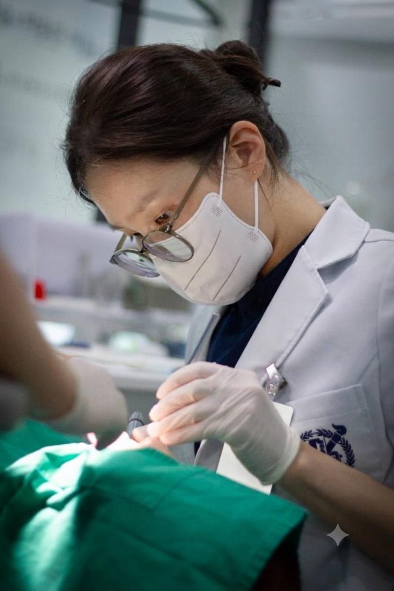
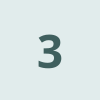
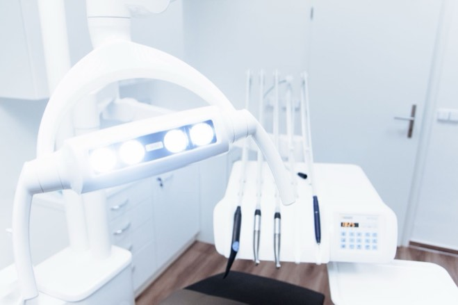
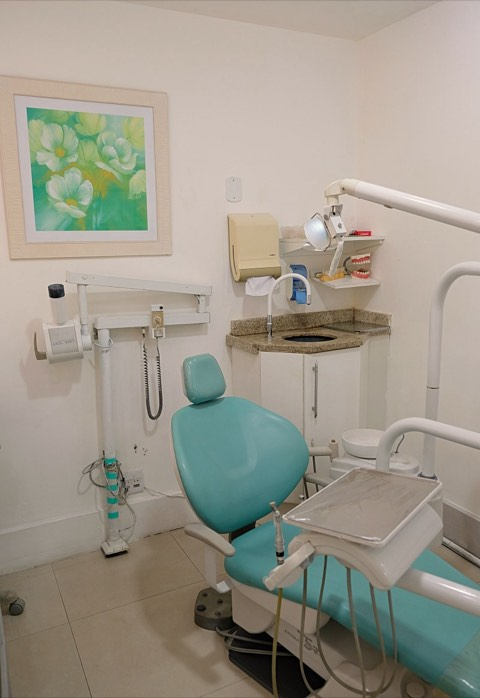
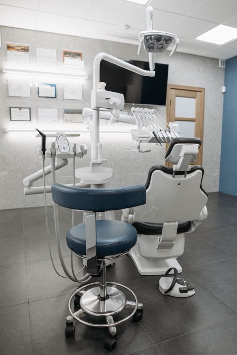
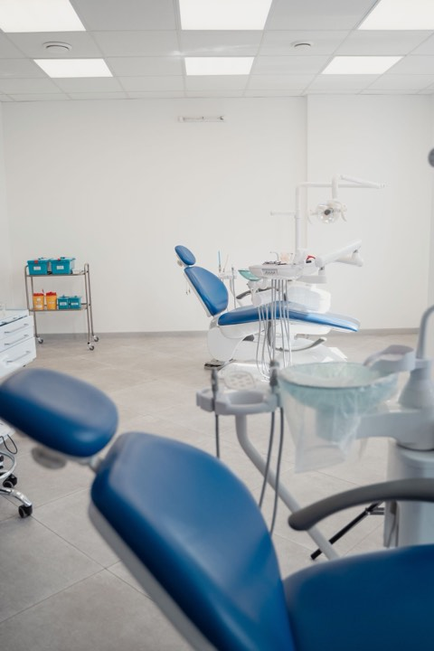

설명을 먼저 드리고, 치료는 그다음입니다.
서울세심한치과의원
필요한 치료만 권합니다.
지금 필요하지 않은 치료는 권하지 않습니다.
같은 원장이 처음부터 끝까지 봅니다.
처음 상담한 원장이 마지막 점검까지 맡습니다.
원장 소개
임소아 대표원장
진료실에서 지키는 세 가지 원칙입니다.
상담 문의-
설명을 먼저
치료 방법과 순서를 진료 전에 충분히 설명드립니다.
-
필요한 치료만
지금 필요하지 않은 치료는 권하지 않습니다.
-
같은 원장이 끝까지
처음 상담한 원장이 마지막 점검까지 맡습니다.

-
1학력과 수련
- 1.1{확인 필요: 약력 1}
- 1.2{확인 필요: 약력 2}
-
2경력과 소속
- 2.1{확인 필요: 약력 3}
- 2.2{확인 필요: 약력 4}
-
3전문 분야
- 3.1임플란트, 치주치료, 충치치료, 신경치료, 미백치료, 턱관절치료
-
4진료진
- 4.1

임소아 대표원장
- 4.1
진료 과목
내 치아처럼, 세심하게 진료하겠습니다
서두르지 않고, 전문성과 세심함을 다해 진료하겠습니다.
- 01
임플란트
빠진 치아 자리에 인공 치근을 심어 씹는 기능을 회복하는 치료입니다.
- 02
충치·신경치료
충치의 깊이를 확인하고 치아를 가능한 한 보존하는 방향으로 치료합니다.
- 03
스케일링·잇몸치료
치석과 잇몸 염증을 관리해 잇몸 건강을 유지하도록 돕습니다.
- 04
심미·미백
치아 색과 모양을 자연스럽게 다듬는 치료를 상담 후 진행합니다.
- 05
소아치과
아이가 낯선 진료실에 익숙해질 수 있도록 설명하며 진료합니다.
시설
진료 공간을 소개합니다.
진료실과 진료 기구를 사진으로 먼저 보실 수 있습니다.




진료 시간
진료 시간을 안내합니다.
금요일, 일요일과 공휴일은 쉽니다.
- 월·화·수요일
- 10:00–19:00
- 목요일 야간진료
- 10:00–21:00
- 토요일 점심시간 없음
- 10:00–14:00
- 점심시간
- 13:00–14:00
- 금요일·일요일·공휴일
- 휴진
오시는 길
서울 마포구 새창로30 2층
전화 02-711-7528
- 대중교통공덕역 10번 출구, 도보 1분
- 주차건물 지하 1층 (건물 뒷편, 내비게이션에 치과명 입력 시 주차장 입구로 안내됩니다)